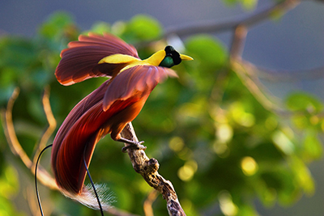
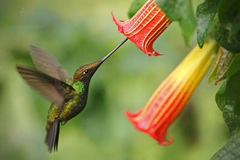

Toucans are members of the Neotropical near passerine bird family Ramphastidae. The Ramphastidae are most closely related to the American barbets. They are brightly marked and have large, often-colorful bills. The family includes five genera and over forty different species.
Birds of paradise

Bird steching hes wings
The birds-of-paradise are members of the family Paradisaeidae of the order Passeriformes. The majority of species are found in eastern Indonesia, Papua New Guinea, and eastern Australia. The family has 42 species in 15 genera.
Sword-billed hummingbird

hummingbird dinner time
The sword-billed hummingbird is a neotropical species of hummingbird from the Andean regions of South America. It is the sole member of the genus Ensifera and is characterized by its unusually long bill; it is the only bird to have a beak longer than the rest of its body.